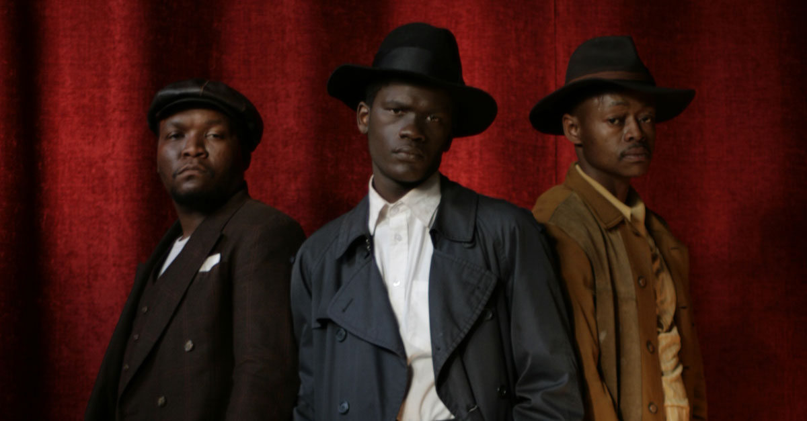
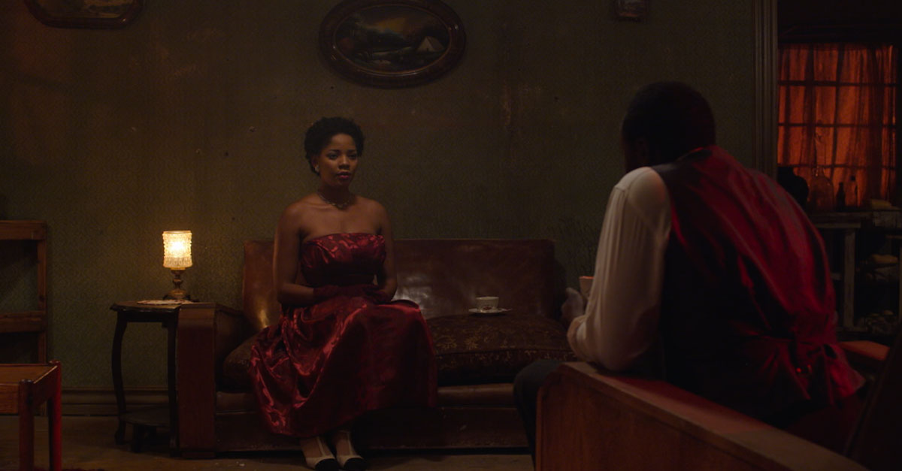

The musicians, Sjava and Kwesta have collaborated for the first time on a song for Angus Gibson’s feature, Back of the Moon, a gangster tale with a love story enmeshed, which was filmed by the Bomb crew in a hectic three weeks. It was written by Libby Dougherty and stars Richard Lukunku, Moneoa Moshesh and Lemogang Tsipa. Editing has just been completed.
Sophiatown. 28 July 1958. Badman, an intellectual that could have been one of our country’s great leaders, compromised by a sharp, dark streak, has instead become a gangster. Respected and feared on the streets of Sophiatown he has managed to live life so far on his own terms.

But tomorrow his home will be taken from him and he will be moved to a township where he will face the bleak reality of black South African life outside the bubble of this cosmopolitan ghetto.
Depressed and ashamed of what he has become, he picks a battle with his own gang and arming himself with a six shooter, he resolves that unlike the protesters that have lost the battle against removals before him, he will not be taken alive from his home.

In this suicidal moment, fate puts Eve, the greatest singing star of Sophiatown, and the woman that he has always dreamed of, in his arms and he realizes that with her at his side, he can face anything.
The Awards & Nominations in Full
BACK OF THE MOON won the Best International Narrative Feature Award AT THE 16th Montreal International Black Film Festival. Directed by Academy Award nominee, Angus Gibson,
BACK OF THE MOON stars Richard Lukunku, Moneoa Moshesh, Lemogang Tsipa and Thomas Gumede, and is produced by Desiree Markgraff and executive produced by William Kentridge and Anant Singh.
- Best Achievement in Production Design - Feature Film — Dylan Lloyd
- Best Achievement in Editing - Feature Film • Sibongeleni MabuyakhuluMegan Gill
- Best Achievement in Original Music/Score - Feature FilmPhilip Miller
- Best Achievement in Costume Design - Feature FilmTrudi Mantzios
- Best International Narrative FeatureAngus Gibson